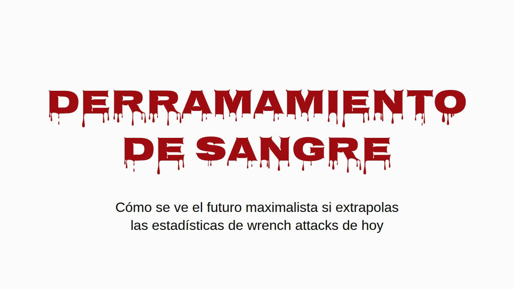

Supón que ganan los maximalistas. No la versión del precio objetivo, la de verdad: bitcoin es donde la gente guarda su patrimonio, y lo guarda como la comunidad le dice, en autocustodia, en su casa. A mí me gustaría que ese mundo existiera. Por eso vale la pena preguntarse cómo se ve cuando le metes los números de wrench attacks de hoy.
La respuesta corta es que Inglaterra y Gales acabarían enterrando gente más o menos al ritmo al que Ucrania enterró civiles en 2025, por robos que ya pasan hoy. La respuesta larga trae salvedades, y están todas abajo, pero ninguna hace que el problema desaparezca.
Un wrench attack de cada veintidós
Jameson Lopp lleva un registro público de ataques físicos contra poseedores de cripto. Es el mejor registro que existe, y es una muestra sacada de la prensa, así que se le escapa todo lo que nunca salió en las noticias. Revisé los 351 incidentes distintos que tiene y leí cada titular que mencionaba una muerte. La búsqueda por palabra clave en la que se apoya la cifra publicada atrapa algunas filas equivocadas (un pueblo llamado Killingly, dos atacantes abatidos por la policía, un asesinato que solo estaba planeado) y se le pasan algunas reales ("beaten to death" no coincide con "killed").
Contadas a mano: 16 víctimas muertas en 351 incidentes, 4.6%. Con una muestra de este tamaño, el rango honesto va más o menos de 2.8% a 7.3%. Como uno de cada veintidós wrench attacks termina con alguien muerto.
Eso es un piso, y no por la razón de siempre. Cuando matan a un poseedor de bitcoin, quienes lo lloran muchas veces son los que ahora tienen sus llaves. Decirle a la policía, o a un periodista, que la víctima tenía bitcoin es anunciar que alguien en esa casa lo tiene ahora. Así que los asesinatos con menos probabilidad de quedar registrados como ataques por bitcoin son justamente aquellos en los que las monedas sobrevivieron. Nadie puede ponerle número a cuántos son, y de eso se trata un poco. The Denial Spiral explica por qué este tipo de punto ciego no se corrige solo.
El mismo silencio opera también del otro lado de la fracción, eso sí. Quien sobrevive a un ataque tiene exactamente los mismos motivos para no contarle a nadie lo que tenía, así que los casos no fatales también están subcontados. Los asesinatos ocultos empujan la proporción real hacia arriba y las supervivencias ocultas la empujan hacia abajo, y nadie sabe cuál pesa más. Por eso tomo el 4.6% tal cual, y aguanta tanto si lo lees con cautela como si lo lees con agresividad.
Solo cuando hay alguien en casa
La mayoría de los robos a casa no son wrench attacks. Alguien se mete mientras estás en el trabajo y se va con la laptop, y en un mundo bitcoin una semilla grabada en una placa de acero en el cajón correría la misma suerte. Se lleva la placa, se lleva las monedas, nadie sale lastimado. En los términos de The Deadly Race, eso es un éxito claro para el ladrón, sin ningún motivo para regresar. Así que deja fuera las casas vacías por completo.
Aun así quedan los robos con alguien adentro. Pasan hoy, en cantidades grandes, y en Inglaterra y Gales son más de la mitad de los robos a casa habitación en los que el ladrón logra entrar. Hoy la persona en la casa es un estorbo entre el ladrón y la tele. Con la premisa maximalista, la persona en la casa es la caja fuerte: el patrimonio está detrás de un PIN, una passphrase, un recuerdo, y ella está parada ahí mismo. Eso es un wrench attack, y los wrench attacks terminan en una muerte al menos una vez de cada veintidós.
La aritmética
Toma los robos a casa registrados por la policía en cada país, quédate solo con la parte en la que había alguien, y multiplica por 4.6%. Sin línea base, sin convertir casas vacías, sin suponer nada sobre qué consejos sigue la gente. Nada más las muertes adicionales.
![Gráfica de columnas, muertes adicionales por cada 100,000 habitantes al año si los robos actuales a casas ocupadas fueran wrench attacks. Inglaterra y Gales: 6.2, rango de 3.8 a 9.8. Estados Unidos: 1.5, rango de 0.9 a 2.4. Banda de referencia: civiles muertos en la guerra de Ucrania en 2025, de 6.6 a 7.6 por cada 100,000. Extrapolación condicional, no un pronóstico: robos a casa registrados por la policía, por la proporción con alguien en casa, por 4.6%, la proporción de wrench attacks registrados contra bitcoiners que terminan en una muerte, según un registro basado en prensa. La cifra de Ucrania cuenta solo muertes de civiles verificadas por la ONU, sin soldados.](assets/m1-bloodshed.png)
Las líneas negras de la gráfica, y la columna de rango de abajo, muestran dónde cae cada cifra si la proporción real de muertes está en cualquier punto entre 2.8% y 7.3%.
| Muertes adicionales por cada 100,000 al año | Estimación | Rango |
|---|---|---|
| Inglaterra y Gales (la mitad de los robos con alguien en casa) | 6.2 | 3.8–9.8 |
| Estados Unidos (28% con alguien en casa) | 1.5 | 0.9–2.4 |
| Ucrania, civiles muertos en la guerra, 2025 | 6.6–7.6 |
Inglaterra y Gales caen en el mismo rango que un país en guerra: 6.2 muertes adicionales por cada 100,000 al año, contra 6.6 a 7.6 civiles muertos en Ucrania en 2025, el año más letal para los civiles desde 2022. La cifra ucraniana son solo muertes de civiles verificadas por la ONU, sin soldados, y la propia ONU dice que se queda muy por debajo del saldo real. Es el número de guerra más conservador que hay.
Estados Unidos sale más bajo, como la cuarta parte, sobre todo porque muchos menos robos allá pasan con alguien en casa (28%). Francia y Alemania no publican esa proporción, así que no están en la gráfica.
Todo esto es una extrapolación condicional y no un pronóstico. Usé robos registrados por la policía, que se quedan cortos; las encuestas de victimización ponen el número real bastante más arriba. La tasa de muertes sale de ataques que la prensa decidió reportar, lo cual probablemente la infla. Y todo descansa en un supuesto, que prefiero nombrar a esconder: que un ladrón que encuentra en casa al dueño de una fortuna en bitcoin se comporta como el autor de un wrench attack. El registro son 351 casos de cómo se ve ese comportamiento.
Tampoco se está volviendo menos letal. La proporción de ataques registrados que terminan en una muerte se ha mantenido en 4–5% a lo largo de la historia del registro (4.1% hasta 2020, 4.1% en 2021–23, 5.0% desde 2024), mientras el número de ataques por año más o menos se duplicó. Mismas probabilidades, más tiradas.
Donde ya está pasando
Todo lo anterior trata de un futuro en el que todo el mundo tiene bitcoin. Lo que sigue trata de la gente que lo tiene ahora, y es el mismo riesgo visto desde la otra punta: la aritmética de los robos es en lo que esto se convierte cuando toda la población entra en el denominador.
En Francia nada de esto necesita un futuro hipotético. Francia es el país con más entradas en el registro, y lo que la distingue es el método: 57% de los incidentes franceses son secuestros o tomas de rehenes según el titular, contra más o menos 35–40% en el mundo, y nueve de los doce casos en los que los atacantes se llevaron a un familiar en lugar del poseedor son franceses.
La fiscalía nacional contra el crimen organizado contó unos veinte secuestros o privaciones de la libertad ligados a cripto en 2024, 67 en 2025, y más de setenta en los primeros ocho meses de 2026. Repartidos entre los cinco millones y medio a seis millones de poseedores de cripto en Francia (10–11% de los adultos, según las encuestas de la propia industria, 2025 y 2026), da como 1.2 por cada 100,000 poseedores en 2025 y 1.8 al ritmo de este año.
Nigeria, trágicamente famosa por los secuestros, tuvo unos 3.4 secuestros por cada 100,000 habitantes en el año a junio de 2026, según el conteo de prensa que casi todos citan. Los dos números son casos reportados, los dos se quedan cortos, y la fama de Nigeria también se construyó con los reportados.
O sea que el poseedor francés promedio todavía está más seguro que el nigeriano promedio. Pero ese promedio incluye a todos los que tienen cincuenta euros en una app, y a esos nadie los secuestra. Cuatro de cada cinco poseedores franceses tienen menos de €5,000. Los atacantes eligen riqueza visible, así que la comparación justa es con la gente que eligen, y a esa se le puede poner cota sin adivinar nada.
La misma encuesta pone el total en manos francesas en €21–26 mil millones, y ese único número topa cada rango de patrimonio. En Francia no puede haber más de unas 26,000 personas con un millón de euros o más en cripto, porque si hubiera más, tendrían más que el total. Con medio millón el tope es de unas 52,000; con €100,000, unas 262,000. Cada tope es absurdamente generoso, porque no le deja nada a los otros cinco millones y medio de poseedores, y un denominador más grande solo hace más chica la tasa.
Para el numerador tomé solo los casos franceses, de enero de 2025 a agosto de 2026, en los que la prensa reportó cuánto tenía de verdad el hogar de la víctima:
- el padre de un "millonario cripto", retenido por un rescate de €5 millones y mutilado antes de que la policía lo liberara (París, mayo de 2025);
- un trabajador de la industria cripto al que le robaron €2 millones en bitcoin (París, agosto de 2025);
- una pareja de jubilados secuestrada por los €8 millones de su hijo (Sallanches, enero de 2026);
- una pareja a la que le robaron €900,000 unos tipos que se hicieron pasar por policías (Le Chesnay, marzo de 2026);
- una familia de cinco retenida como rehén hasta que transfirió €700,000 (Ploudalmézeau, abril de 2026).
Todos los demás cuentan como sardinas, incluido David Balland, el cofundador de Ledger secuestrado en enero de 2025 por un rescate que se reportó de €5–10 millones, porque lo que él tenía personalmente nunca se publicó. Divide y anualiza:
| Cripto en su poder | Como máximo esta gente en Francia | Secuestrados, por cada 100,000 al año, al menos | vs Nigeria (3.4) | vs Haití (5.5) |
|---|---|---|---|---|
| €250,000+ | 105,000 | 2.9 | 0.8× | 0.5× |
| €500,000+ | 52,000 | 5.7 | 1.7× | 1.0× |
| €1 millón+ | 26,000 | 6.9 | 2.0× | 1.3× |
| €2 millones+ | 13,000 | 9.2 | 2.7× | 1.7× |
| €5 millones+ | 5,000 | 11.4 | 3.4× | 2.1× |
![Gráfica de columnas: poseedores franceses de cripto, secuestros por cada 100,000 al año, al menos. Todos los poseedores 1.8. Hogares con 250 mil euros o más en cripto 2.9; 500 mil o más 5.7; 1 millón o más 6.9, con una extensión punteada hasta cerca de 18 que marca una estimación si Francia tiene su proporción normal de los millonarios cripto del mundo; 2 millones o más 9.2; 5 millones o más 11.4. Líneas de referencia punteadas: Nigeria 3.4 (conteo de prensa, 2025 a 2026) y Haití 5.5 (conteo de la ONU, 2025). Los rangos cuentan solo casos franceses de enero de 2025 a agosto de 2026 en los que la prensa reportó lo que tenía el hogar, divididos entre la mayor cantidad de gente que Francia podría tener en cada rango, así que cada barra es un piso; las barras de arriba descansan en uno o dos casos.](assets/m2-kidnapping-ladder.png)
La tasa sube en cada escalón, que es como se ve la selección de objetivos desde afuera. De más o menos un tercio de millón de euros para arriba, el puro piso ya le gana a Nigeria.
Es un piso construido sobre un techo: un puñado de los casos conocidos sobre la población más grande que la aritmética permite. La mayoría de las víctimas nunca reporta lo que tenía, así que cada fila se queda corta, y las filas de arriba descansan en uno o dos casos cada una. Cuenta a Balland y la fila de arriba se duplica.
¿Qué tan holgado es el techo? La riqueza en la cima sigue una ley de potencias muy empinada, lo que quiere decir que el número real de millonarios cripto en Francia está muy por debajo de 26,000, no cerca. Una suposición menos extrema: dale a Francia su proporción normal de los millonarios del mundo, poco más de 4% (2.4 millones de 57.5 millones, según UBS), y aplícala a los aproximadamente 242,000 millonarios cripto del mundo (Henley & Partners). Salen unas 10,000 personas, y una tasa de secuestro para ellas de unos 18 por cada 100,000 al año, más de cinco veces la cifra nigeriana. Ojo, eso ya es una estimación; el piso es la tabla.
Un hogar francés con medio millón de euros en cripto tiene más probabilidades de que le secuestren a alguien que un nigeriano cualquiera, contado de la misma forma con la que se hizo la fama de Nigeria.
Haití, una nación trágicamente colapsada, tuvo al menos 647 secuestros documentados en 2025 según el conteo caso por caso de la misión de la ONU, que ella misma llama un mínimo: al menos 5.5 por cada 100,000 habitantes. De como un millón de euros en cripto para arriba, el piso francés también supera eso.
Si el crecimiento de este año se sostiene, los poseedores franceses en su conjunto, sardinas incluidas, alcanzan la tasa actual de Nigeria alrededor de 2028.
Y no ha bajado el ritmo. En septiembre dos hombres enmascarados retuvieron en su casa de Niza a una madre y a su hijo por una cuenta de $25,000, y en agosto una familia cerca de Rennes fue atacada por una banda que se equivocó de casa.
Cambia cuando duele
La gente no rediseña su seguridad porque un argumento sea bueno. Lo hace cuando el costo de no hacerlo ya no se puede ignorar. Cuando se hizo público el bug de aleatoriedad de Coldcard, las recomendaciones de la comunidad pasaron en días a tirar cincuenta dados a mano, un procedimiento que un mes antes se habría despachado como paranoia. La tolerancia al esfuerzo no es fija. Se mueve cuando la amenaza se vuelve legible.
Aquí la amenaza ya es legible, al menos en Francia. Lo que el cambio tiene que lograr es el criterio de la carrera mortal: una vez que el atacante te tiene a ti y todo lo que posees, el ataque tiene que terminar claramente, o porque ya lo tiene o porque no queda nada más que sacar. Lo que no puede hacer es dejar un camino que solo tú puedes terminar, porque ese camino te vuelve su competidor, y el paper trata de lo que les pasa a los competidores.
Great Wall es una construcción hecha para pasar esa vara, y el paper explica cómo. No va a ser la última, y no tiene por qué ser la que tú elijas. El futuro maximalista necesita alguna custodia que la pase, o se va a parecer mucho a la gráfica.
El criterio, y por qué un decomiso parcial le pone precio a la vida del poseedor, están en The Deadly Race. Por qué la negativa, los señuelos y la discreción se desgastan, y por qué el registro se queda corto, está en The Denial Spiral. Los dos en acceso abierto, sin registro.
Datos de incidentes del registro de Jameson Lopp, corte del 13 de agosto de 2026. Robos a casa: SSMSI (Francia, 2025), ONS (Inglaterra y Gales, año a marzo de 2025), FBI (EE. UU., 2024), PKS (Alemania, 2025). Homicidios: SSMSI, ONS, FBI, UNODC. Robos con alguien en casa: BJS, ONS. Ucrania: OHCHR 2025. Secuestros en Francia: PNACO. Haití: BINUH 2025. Nigeria: SBM Intelligence, julio de 2025 a junio de 2026. Poseedores y total en su poder: ADAN/Deloitte/Ipsos 2025, ADAN 2026.
Si valió tu tiempo. Mándaselo a quien te convenció de tu arreglo actual. Una ⭐ en Great Wall, la investigación o estos textos no cuesta nada y hace más fácil encontrar el trabajo. Y si quieres financiarlo, support acepta ⚡ Lightning y on-chain, sin registro, sin niveles, sin esperar nada de vuelta.